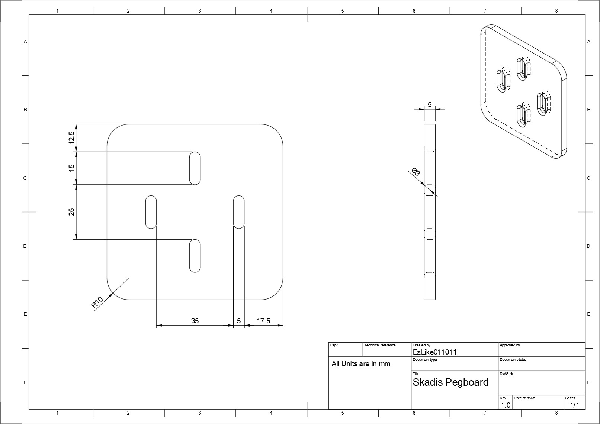

Things have been a bit rough lately. Met with life plans that didn't pan out the way I expected, I've been forced to really consider what I want to do with my life. When in a position like that and feeling like you've "failed" to be successful, it's hard to recognize positive impacts you've had on the world.
This brings me to my focus today. While spring cleaning, I found myself needing an accessory for my workbench. I use an IKEA SKADIS pegboard which has great support from the 3d printing community, but the tool I wanted to mount didn't have anything on any of my favorite model repositories. As I started to model one myself, I realized I needed dimensions for the spacing of the pegboard holes and instead of measuring the one 8 ft away from my computer I googled "skadis pegboard dimensions". One of the first results was a reddit post with the same question. The top response being... a comment I left 3 years ago (albeit with an old screen name I no longer use). I apparently saw this post and threw together a diagram on the spot to resolve the original poster's request. That image has been viewed 10,745 times at the time of writing. I don't remember doing this at all.
This post doesn't have a well-thought-out thesis statement. It's just me acknowledging a reminder of success. If it were to have one I think it would be to not be afraid to use whatever skills you have. The fact that I don't even remember making this comment goes to show how effortless it was to help. Yet, the 10 minutes out of my day to post it has helped countless people even if in the most mundane way imaginable. So if you see something that you have the talents to help out with and it's not too much of a problem to do so, do it. You might be surprised what mark it makes on the world.
In case that link ever dies and somehow you ended up here looking for SKADIS pegboard dimensions, I've attached the original image below.
